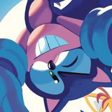

*Click on image to be redirected to its source
Media: Sonic the Hedgehog + Shuuen no Shiori Project + Vocaloid + To The Moon series (SigCorp) + Project Sekai + more...
General: mathematics + media-specific music + mechanical keyboards + programming + technology in general + creative writing + foxes + hydrangeas
You're bigoted in general, transphobic, a proshipper, or sexualize minors. I block freely!
Twitter: @ALTCODE255 & @FIND_YOUR_FLAME
Tumblr: alt255 & meridan3te
Discord: NAMELESS#9458
AO3 | CuriousCat (Q&A) | Github
Steam | SW-4891-4405-5800 (Nintendo Switch) | 26796086945787912 (Project Sekai JP)